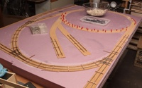

Track Work
Click any image for a larger view in a new browser tab.
| Measuring just 30 x 48 inches, this is my first effort at a model railroad in over 35 years.
It was inspired by my son's desire to build the pen and pencil organizer shown below, which was in turn inspired by one he had seen on line. We had a great time researching scenery techniques, and decided a slightly larger model railroad would be a fun next step. |
||
 |
||
|---|---|---|
| Inspired by a micro layout challenge using a standard cork board for the base, my first track sketches were drawn with a 9-inch ruling radius tucked into a 2x3 foot area. Then I found drawings for some little box cars that I decided to build. Since they called for a 12-inch min. radius, I enlarged the layout drawing by a third to arrive at the track plan shown above.
Some of you know I can't do much the easy way, and this project was no different. I couldn't find commercial track with the parameters I needed, so decided to try laying my own. The first step was to determine if I could do it at all, and started with the trickiest part, a turnout. |
||
 |
||
| A little research quickly lead me to the FastTrack system for hand laid track. I have some light milling capability and so designed some basic tooling sized for Code 83 rail that I stripped from Atlas Flex Track. The above images show my first fixtures, for a left hand turnout and a 12-inch radius curve, along with fitting the first rail and tie samples.
I bent the above rail between my fingers and while the results were promising, my hand bending was inconsistent at best. The next couple evenings resulted in the rail bender below. |
||
| The rail bender gives very smooth results and with a little trial and error I soon had enough stock to make up my first turnout. The truck shown handled the tight radius of this little sample surprisingly well and gave me the confidence to push on with my handiwork. | ||
| I tested the curve fixture while still on the mill by simply pressing rails into the fixture. I soon had a second turnout complete, and prebent some rail that I slid back into the plastic ties to give the larger arc shown. | ||
| At this point I had enough track to do some testing, and my small Bachmann Porters had no trouble negotiating the tight curves. It was time to push on to the actual track plan. | ||
|  | ||
| The track sits on some thin cork sheet that I hand cut into strips and glued to the foam base board with construction adhesive. I then made up sections of track as needed, with just the PC board ties holding them in gauge.
While the glue was drying on the cork, I cut what seemed like miles of strip wood for the ties out of a clear poplar 1x4 from Lowes. Rough cutting that board into 16-inch lengths made it easier to handle when ripping to final size. I stained the ties after cutting to length, using dilute solutions of denatured alcohol and leather dye. Different concentrations of black and brown die, as well as different immersion times, gave a variety of color to the ties to suggest different times in service. |
||
| Once all the metal work was done, I started gluing down the wood ties. Most sections have five wood pieces spaced between each soldered pair.
The 123 blocks are ideal weights for holding the ties in place while the Titebond grabs. I tried to make the ties a little uneven to help give that "backwoods" feel to the track work, and probably could have gone even a bit further. |
||
 |
||
| I ended up spiking every other tie which is more than needed. It looks good though, and spaced out evenly with the soldered ties. I also offset the spikes between the inside and outside of the rail to prevent splitting.
The cork roadbed is very thin on purpose, as this will represent a small operation with a limited budget. The ballast test was done with coarse sand. I think it is about the right look, as long as I don't mix in the white gravel. The color of the larger bits should blend better. The last image shows a typical installation of the DPDT switches used to actuate the turnout points. I cross drilled each knob to anchor pushrods that run to both sides of the layout. The socket head cap screws are drilled axially with music wire soldered into the ends. These extend up through the foam to the throw bars. The switches are wired to change the polarity of the powered frogs for smooth operation. |
||
Copyright 2016, Thayer Syme
All rights reserved